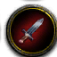

The role icons are now the real queue icons in HD — 64px frames of WoW's own LFG texture:

Damage · Tank · Healer · Support. And each door gains one more thing between the name and the range, three ways below.The client's own texture is only 16px (that was the blur). The HD frames come from the canonical mirror of the game's interface art. Bonus: the HD set carries a green flag in the same gold-rim style — your original Support instinct — so it replaces the low-res crown as the default. The crown ( 16px) stays recorded as the alternative. Confirm flag or crown.
All 21 ruled cards with WoW role art and your current middle-element pick.